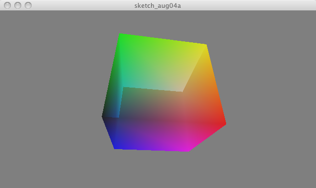

Test for drawing transparent objects which use vertex()
Colors are slightly off, which is known.

// Test
float xmag, ymag = 0;
float newXmag, newYmag = 0;
void setup()
{
size(640, 360, P3D);
noStroke();
colorMode(RGB, 1);
}
void draw()
{
background(0.5);
pushMatrix();
translate(width/2, height/2, -30);
newXmag = mouseX/float(width) * TWO_PI;
newYmag = mouseY/float(height) * TWO_PI;
float diff = xmag-newXmag;
if (abs(diff) > 0.01) { xmag -= diff/4.0; }
diff = ymag-newYmag;
if (abs(diff) > 0.01) { ymag -= diff/4.0; }
rotateX(-ymag);
rotateY(-xmag);
scale(90);
beginShape(QUADS);
fill(0, 1, 1,0.5); vertex(-1, 1, 1);
fill(1, 1, 1,0.5); vertex( 1, 1, 1);
fill(1, 0, 1,0.5); vertex( 1, -1, 1);
fill(0, 0, 1,0.5); vertex(-1, -1, 1);
fill(1, 1, 1,0.5); vertex( 1, 1, 1);
fill(1, 1, 0,0.5); vertex( 1, 1, -1);
fill(1, 0, 0,0.5); vertex( 1, -1, -1);
fill(1, 0, 1,0.5); vertex( 1, -1, 1);
fill(1, 1, 0,0.5); vertex( 1, 1, -1);
fill(0, 1, 0,0.5); vertex(-1, 1, -1);
fill(0, 0, 0,0.5); vertex(-1, -1, -1);
fill(1, 0, 0,0.5); vertex( 1, -1, -1);
fill(0, 1, 0,0.5); vertex(-1, 1, -1);
fill(0, 1, 1,0.5); vertex(-1, 1, 1);
fill(0, 0, 1,0.5); vertex(-1, -1, 1);
fill(0, 0, 0,0.5); vertex(-1, -1, -1);
fill(0, 1, 0,0.5); vertex(-1, 1, -1);
fill(1, 1, 0,0.5); vertex( 1, 1, -1);
fill(1, 1, 1,0.5); vertex( 1, 1, 1);
fill(0, 1, 1,0.5); vertex(-1, 1, 1);
fill(0, 0, 0,0.5); vertex(-1, -1, -1);
fill(1, 0, 0,0.5); vertex( 1, -1, -1);
fill(1, 0, 1,0.5); vertex( 1, -1, 1);
fill(0, 0, 1,0.5); vertex(-1, -1, 1);
endShape();
popMatrix();
}